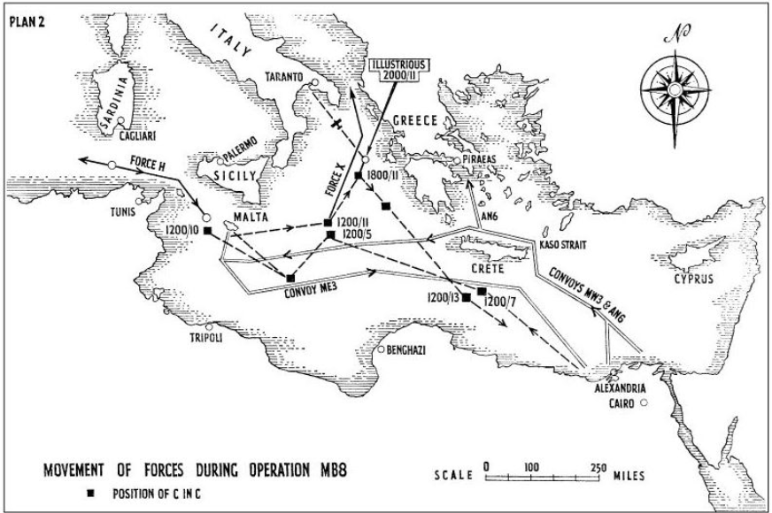
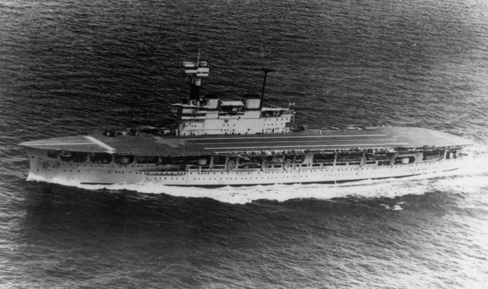
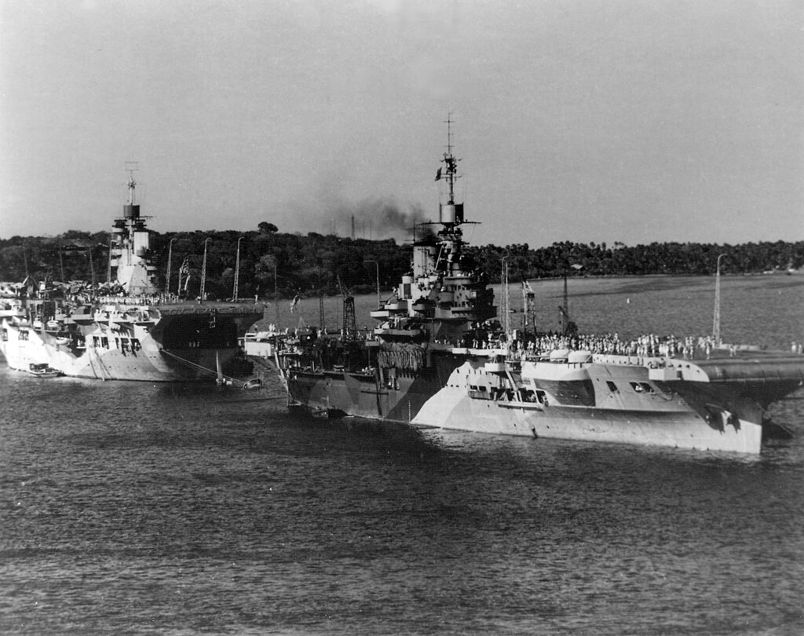
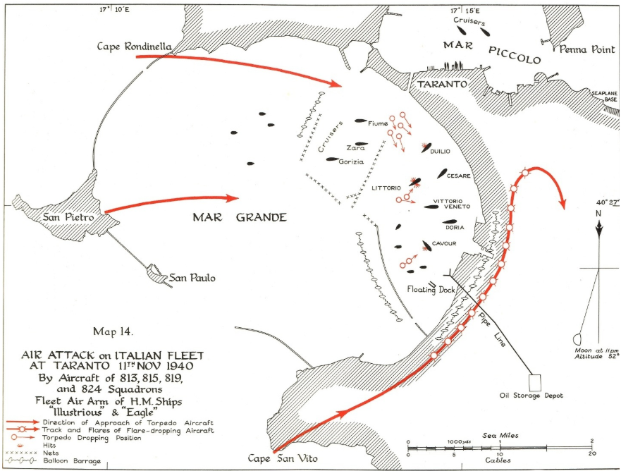
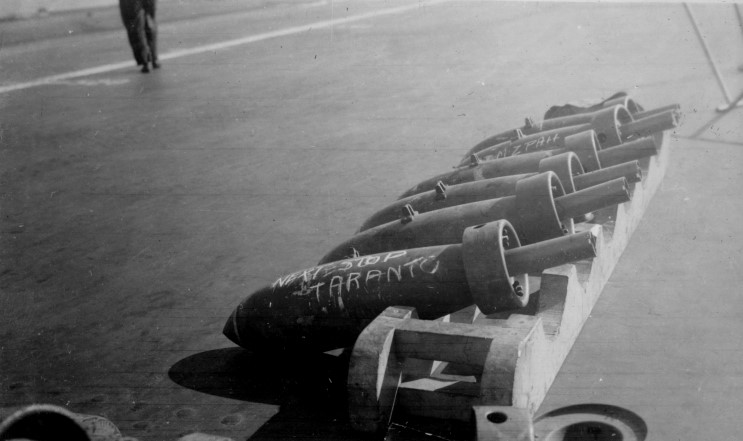
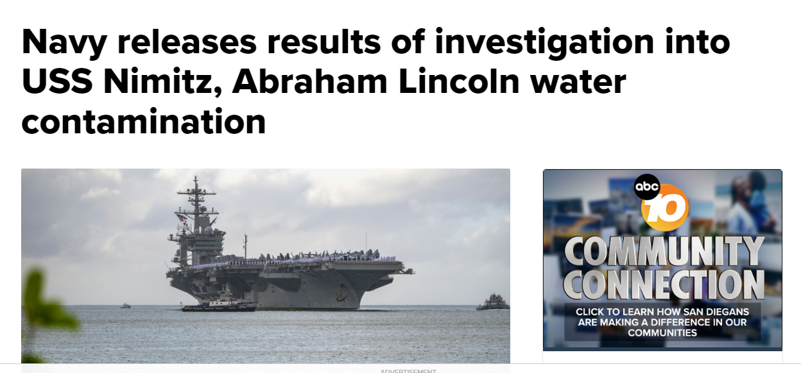
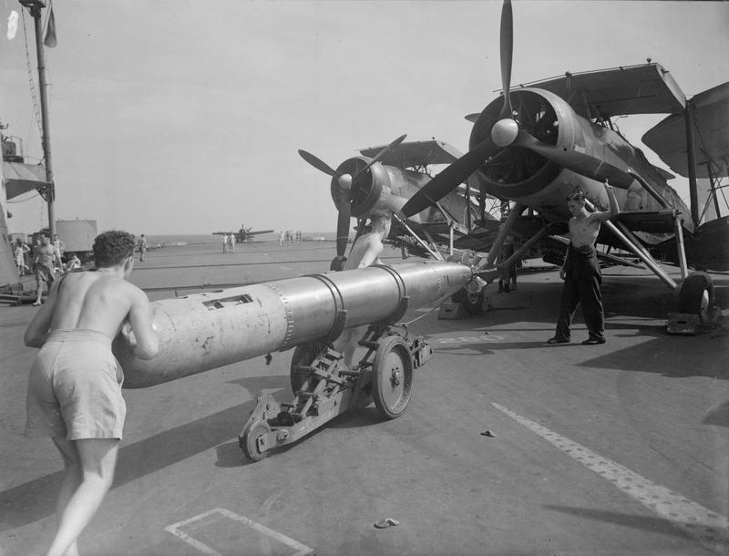

WW2 중 항모에서의 야간 작전 (18) - 왜 자꾸 추락해?
게시: 2025-06-19T06:30:51+09:00
<11발의 어뢰를 위해> 타란토 습격이 끝난 뒤 올린 전과에 대해 영국해군 수뇌부는 물론, 처칠 수상도 크게 기뻐함. 공격을 주도했던 지중해 함대 사령관 커닝햄은 아래와 같이 말하여 그 기쁨을 표현. "고작 6시간의 총 비행시간으로, 20대의 함재기가 이탈리아 함대에 입힌 피해는 (WW1 중의) 유틀란트 해전으로 독일 대양함대에 입힌 피해보다 더 컸다." 이렇게만 보면 영국해군은 정말 적은 전력만 동원하여 엄청난 전과를 올린 것 같지만 이 'Judgement' 작전을 위해 영국 지중해 함대가 동원한 자원은 엄청나게 많았음. 지난 편에서 소개했듯이 영국 지중해 함대는 타란토 습격을 위해 몇 주에 걸쳐 정말 참새 방앗간 드나들 듯 타란토 항구에 정찰기를 날려 사진을 찍어댔음. 그 정도로 영국 정찰기가 날아들면 이탈리아군이 아무리 바보라고 해도 영국이 타란토 항구에 뭔가 공격을 가할 것이라는 짐작을 할 수 밖에 없음. 눈치를 챈 이탈리아 해군이 혹시라도 전함들을 다른 항구로 옮겨두거나, 아니면 정반대로 영국 함대를 맞아 싸우겠다고 이탈리아 함대가 우르르 몰려나오기라도 하면 이 작전은 완전 실패. 그래서 커닝햄 제독은 이탈리아군을 어리둥절하게 만들기 위해 'Judgement' 작전 며칠 전부터 지중해 전역에 걸쳐 대규모의 기동전을 펼침. 서쪽 지브랄타부터 동쪽 알렉산드리아, 그리고 가운데의 말타까지 모든 기지에서 수송선단과 호위함들, 항모들과 전함들이 서쪽에서 동쪽으로, 또 반대로 동쪽에서 서쪽으로, 10여개의 소함대들이 우르르 움직였음. 일부 수송선단은 실제 필요한, 예정되었던 병력 및 물자 운송을 위한 것이었지만 일부는 그저 이탈리아 해군을 헷갈리게 만들기 위한 항해.

(11월 4일부터 '심판' 작전 당일인 11월11일까지 지중해 전역을 휩쓸고 움직인 영국 지중해 함대의 다양한 항해들 - 이 전체 작전은 MB8이라고 명명됨.) <돌격 계획> 타란토 습격에 원래는 낡은 개조 항모인 HMS Eagle까지 포함하여 2척의 항모에서 총 30대의 소드피쉬를 동원할 예정이었으나, HMS Eagle은 7월에 Calabria 해전에 참전했다가 입은 손상 때문에 11월까지도 작전이 불가능했음. 당시 이탈리아 공군기들이 고공에서 투하한 폭탄에 지근탄(near-miss) 피해를 입었던 것. 지근탄이라는 것은 명중하지는 않았으나 함체 바로 옆 바다에 떨어진 폭탄을 말하는데, 물 속에서 폭발하는 폭탄의 폭압은 물이라는 묵직한 매체에 의해 그대로 함체에 전달되어 꽤 큰 피해를 입혀서, 어떤 경우엔 함체에 누수를 일으키기도 함. 이글의 경우 물이 새지는 않았으나, 항공유 탱크와 그 연결 파이프에 균열이 생겨 가솔린과 그 유증기가 약간씩 새는 피해를 입었던 것. 이건 치명적인 폭발로 이어질 수 있는 매우 위험한 상태이므로 반드시 수리가 필요했는데, 집 뿐만 아니라 항모에서도 파이프 누수는 잡아내기가 어려운 것이라 수리가 오래 걸렸던 것.

(HMS Eagle. 2만2천톤, 24노트. 1918년 진수된 전함을 개조하여 만든 항모라서, 함재기도 25~30대 정도만 탑재 가능. 이 사진은 1930년대의 모습. 이글은 지중해에서 계속 활약하다 1942년 8월, U-boat의 어뢰를 얻어맞고 침몰.) 결국 HMS Illustrious 1척만 동원이 가능했는데, 1939년 진수된 최신예함이었던 일러스트리어스는 36대의 함재기를 운용할 수 있었으나 일부 함재기는 호위를 위한 전투기를 실어야 했으므로 탑재 가능한 Swordfish 뇌격기는 딱 24대.

(1944년경의 HMS Illustrious (오른쪽, 2만3천톤, 30노트). 왼쪽은 HMS Unicorn (2만2천톤, 24노트). 유니콘은 독특하게도 항모가 아니라 항공기 수리선박. 제한적인 항모 역할도 가능.) 전투민족 앵글로색슨은 뭐든 때려부수고 죽이는 것에 진심인지라 24대 밖에 안 되는 소드피쉬로 어떻게 하면 이탈리아 함대에게 최대한 피해를 입힐 수 있을까를 치열하게 계획. 그 기본 계획은 다음과 같았음. 1) 12대씩 2개 편대로 나누어 공격. 2) 두 편대는 1시간의 시간차를 두고 이함. 3) 각 편대 중 6대는 Mark XII 어뢰를 장착. 나머지 6대 중 4대는 250파운드 폭탄 6발을 장착. 나머지 2대는 250파운드 폭탄 4발과 조명탄 16발을 장착. 4) 조명탄을 장착한 소드피쉬 2대가 남쪽으로 먼저 돌입하여 부둣가를 따라 조명탄을 투하한 뒤 항구 유류 저장소에 폭탄을 투하. 이들의 목적은 2가지인데, 하나는 뒤이어 서쪽에서 날아들 뇌격기들로부터 시선을 돌리도록 하는 미끼 역할과 함께, 뇌격기들의 시야에 전함 실루엣을 잘 노출시킬 수 있도록 전함들 뒤쪽에 조명탄을 밝히는 것. 5) 4대의 폭탄 장착 소드피쉬는 북쪽 고공으로 침투한 뒤 항구 북쪽의 순양함 및 구축함들에게 급강하하여 폭탄을 투하. 6) 나머지 어뢰 장착 소드피쉬 6대는 저공으로 침투하여 각자 목표로 지정받은 전함들에게 어뢰를 발사.

(그러니까 각 편대는 조명탄조-폭탄조-어뢰조의 3개조로 나누어 각자 다른 코스로 돌입하는 것이 계획)

(타란토 항구에 투하할 250파운드 폭탄. 아마 Next Stop Taranto (다음 정차역은 타란토) 라고 적은 듯.) <자꾸 줄어드는 소드피쉬> 이렇게 계획을 짰으나 작전 며칠 전부터 자꾸 사고가 일어남. 소드피쉬는 초계 및 훈련을 위해 계속 이착함을 했는데, 아무 이유 없이 연달아 3대의 소드피쉬가 이함 직후 바다로 추락한 것. 조종사들은 구축함이 건져냈으나 가뜩이나 부족한 소드피쉬가 3대나 상실된 것은 무척 심각한 일. 가장 골치아팠던 것은 왜 이들이 추락했는지를 모른다는 것. 결국 3번째 소드피쉬가 이함 직후 추락한 뒤에야 최근 급유받은 항공유가 바닷물과 모래, 곰팡이에 오염된 것을 발견. 그 항공유는 알렉산드리아 항구에서 유조선 Toneline로부터 급유 받은 것. 결국 모든 소드피쉬의 연료탱크를 비우고, 톤라인으로부터 급유받은 항공유를 쓰지 않기로 결정.

(항모의 항공유 탱크와 식수 탱크 관리는 여전히 어려운 일이라서, 현대 미해군 핵항모에서도 식수 탱크에 연료가 혼입되는 사고가 종종 발생. 이는 탱크들이 서로 붙어 있다보니 작은 균열에 의해 섞이는 일도 있고, 또 파이프의 누수 혹은 파이프 밸브의 관리 문제로 인해 섞이기도 하기 때문이라고.) 이제 남은 소드피쉬는 불과 21대. 작전 계획에 일부 수정이 불가피하여 아래와 같이 변경. 1) 아무래도 기습이라는 이점을 살릴 수 있는 첫번째 편대가 임무 성공 확률이 더 높으므로 첫번째 편대에 12대를, 그리고 두번째 편대에는 9대를 배치. 2) 첫번째 편대에는 원래대로 6대에 어뢰 장착. 두번째 편대에는 5대에 어뢰 장착. 폭탄 장착 소드피쉬들 중 편대마다 2대씩은 폭탄과 조명탄을 섞어서 장착. 이렇게 11발의 어뢰를 발사한 결과, 결국 3척의 전함에 5발의 어뢰가 명중. 그러나 나중에 드러나지만 나름 신경을 쓴 이 계획엔 헛점이 많았고, 그 결과 더 큰 피해를 입힐 기회가 날아간 셈이 되었음.

(가만 보면 영국해군 복장 규정이 미해군 복장 규정보다 더 느슨한 것 같음)